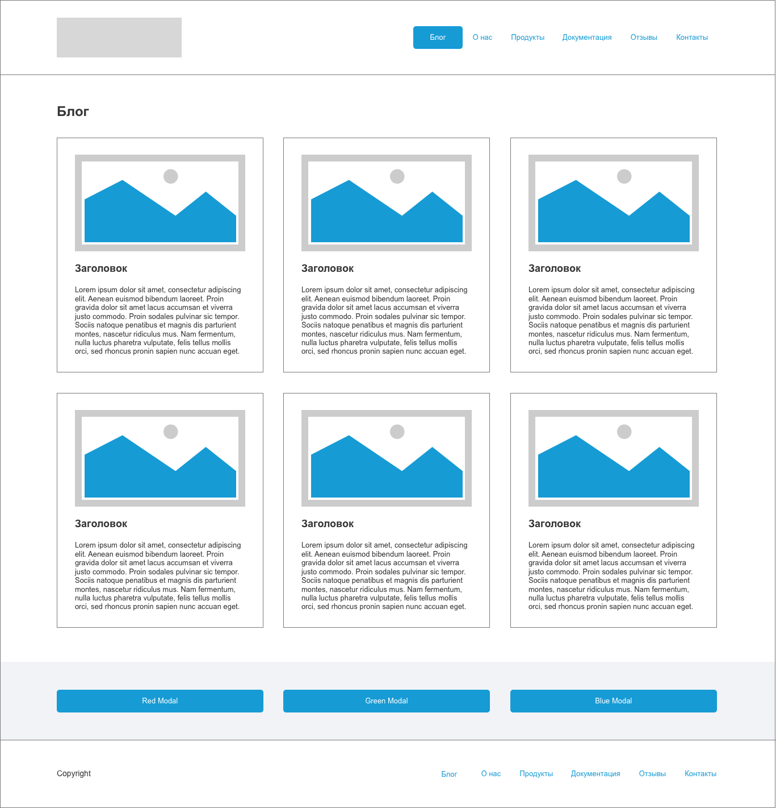
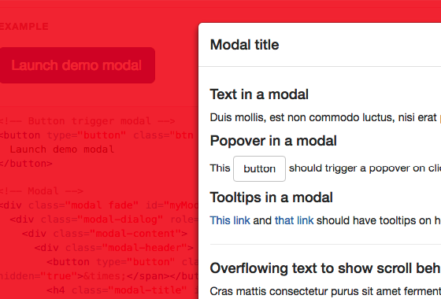
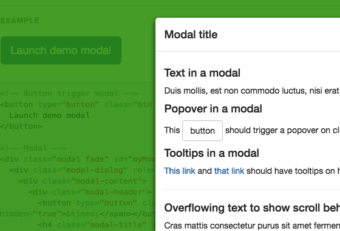
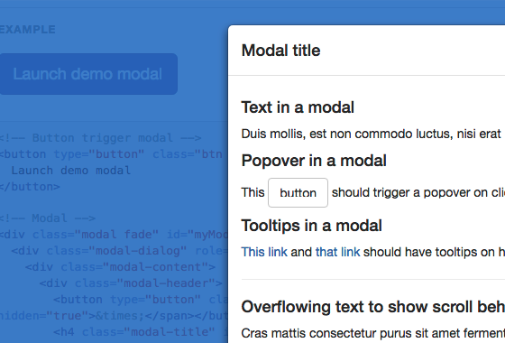

npm install для установки Gulp и плагиновsass/scss в css (scss/main.scss -> css/main.css) и применить его в gulpfile.js с привязкой к основной задаче 'serve' чтобы при сохранении запускалась компиляция, а при изменении *.css файлов запускалcя reload.
npm start для запуска сервера (BrowserSync)views.views/layout.php - лейаутviews/header.php - шапкаviews/footer.php - футерviews/pages/index.php - контент главной страницыviews/modals
С помощью JavaScript, для каждого из модальных окон сделайте соответствующий цвет для '.modal-backdrop':



'data'-атрибуты, выставляя соответствующие классы каждому модальному окну.